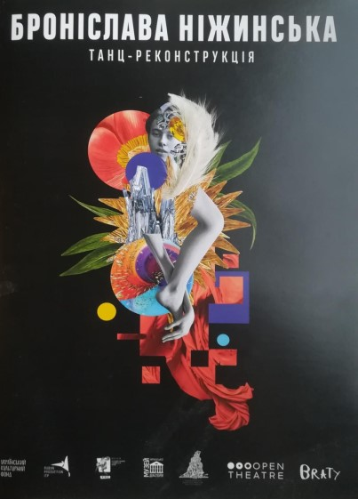
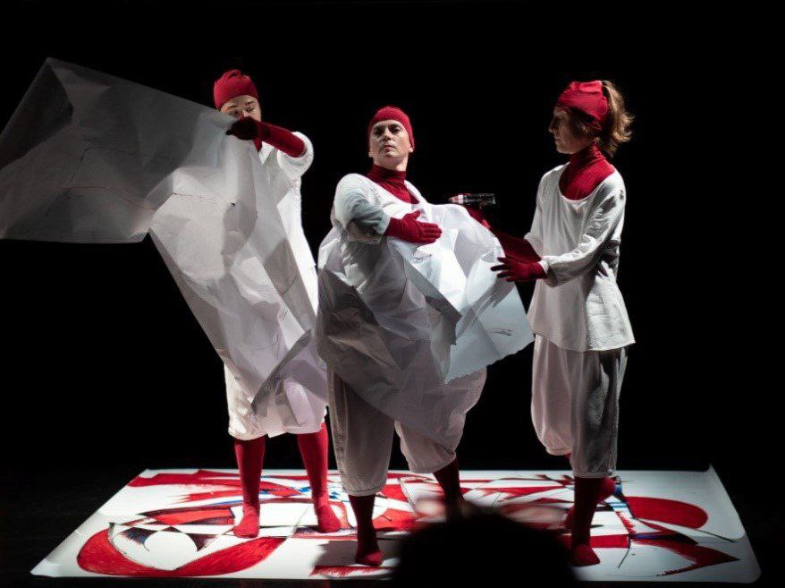
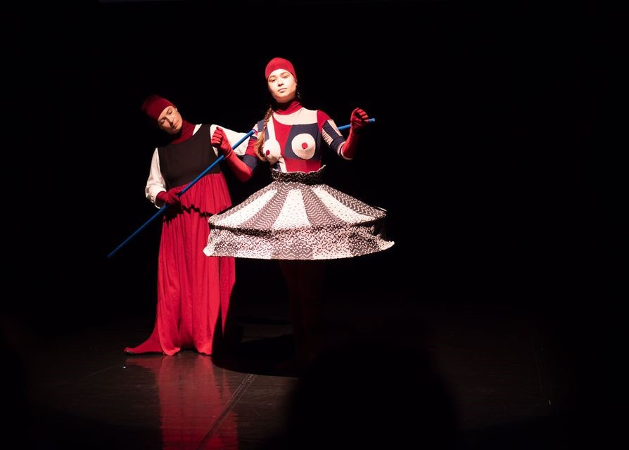
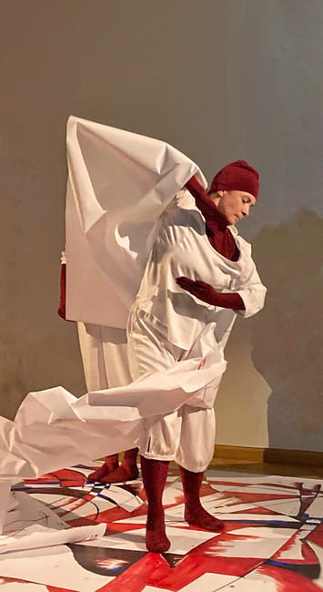
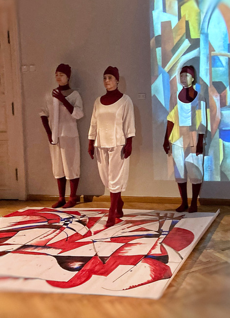
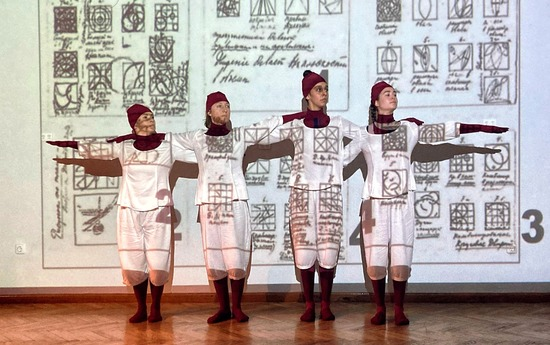
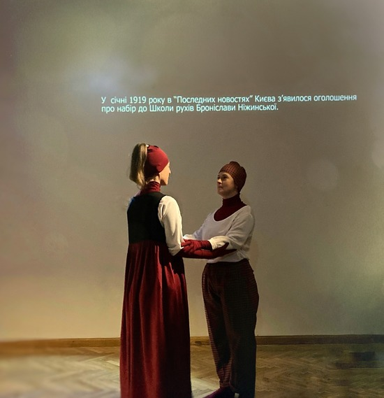

Bronisława Niżyńska (Kijów, Ukraina 2021)

Inicjatorka projektu, choreografka-badaczka: Svitlana Oleksiuk
Kurator i producent projektu: Viktor Ruban
Kompozytor: Yana Shlyabanska
Scenograf i kostiumograf: Bohdan Polishchuk,
Dramaturg / outside-eye: Victoria Myronyuk
Wystąpili tancerze: Olha Kebas, Diana Gebre,
Olha Wydyszewa, Wiktoria Choroszyłowa
Kurator i producent projektu: Viktor Ruban
Kompozytor: Yana Shlyabanska
Scenograf i kostiumograf: Bohdan Polishchuk,
Dramaturg / outside-eye: Victoria Myronyuk
Wystąpili tancerze: Olha Kebas, Diana Gebre,
Olha Wydyszewa, Wiktoria Choroszyłowa
Projekt miał na celu zbadanie twórczości wybitnej
postaci historycznej - tancerki, choreografki, baletnicy i nauczycielki tańca - Bronisławy
Niżyńskiej, która jest znana na świecie dzięki swojemu nowatorskiemu podejściu do
twórczości tanecznej, inscenizacji etiud i performansów. Projekt ten rzuca światło na
genezę innowacyjnej sztuki tanecznej na Ukrainie, zwracając uwagę na mało zbadany okres
lat 10. i 20. XX wieku.





